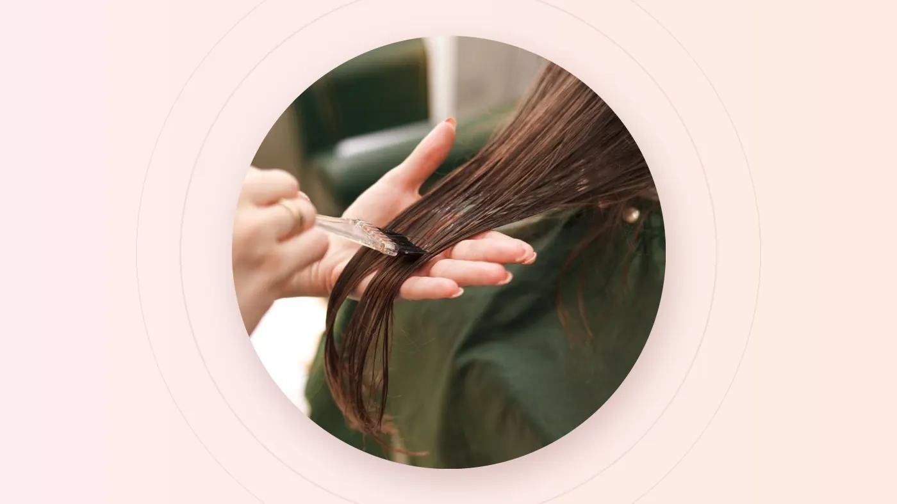

The short answer
A trim fixes the shape of your hair and removes split ends. A treatment fixes how your hair feels and behaves. If your hair still tangles, frizzes, looks dull or snaps soon after a fresh cut, the problem is condition, not length. For most people the best fix is a light trim plus the right treatment.
You booked the haircut. The ends looked crisp for a week. Then the tangles came back, the frizz returned after one humid walk to the bus stop, and your hair went back to feeling like straw. Sound familiar?
That is usually your hair telling you that length was never the real problem. A trim changes what the hair looks like at the tips. It can't change what is happening along the rest of the strand. That is the job of a treatment.
The Two-Minute Self-Check
Before your next appointment, try these quick checks at home. They're rough clues rather than a diagnosis, but they will help you describe what's going on to your stylist.
- The stretch test. Take a single strand of damp hair and gently stretch it. Healthy hair stretches a little and springs back. Hair that snaps immediately, or stretches and stays limp, may be low on strength.
- The slide test. Pinch a strand and slide your fingers from the end towards the root. If it feels bumpy or rough, the cuticle, the hair's protective outer layer, is probably lifted.
- The light test. Stand near a window. Hair with a smooth surface reflects light and looks glossy. A matte, flat look often points to dryness or roughness rather than faded colour.
- The towel test. Notice how your hair dries. Hair that stays soaked for ages, or dries in minutes and puffs up instantly, can be a sign of moisture imbalance.
Trim or Treatment? The Honest Table
| What you notice | What's usually happening | Does a trim help? | Does a treatment help? |
|---|---|---|---|
| Split, see-through ends | The tip of the strand has worn away and split apart | Yes. Cutting is the only real fix | Only temporarily smooths them |
| Frizz in humidity | Hair is absorbing moisture from the air unevenly | A little | Yes, especially smoothing care |
| Dull, flat shine | A rough surface scatters light instead of reflecting it | Rarely | Yes |
| Constant tangling | Raised cuticles catch on each other | Partly, at the ends | Yes |
| Snapping or stretchy hair | Internal strength lost after chemical services or heat | Removes the weakest ends | Yes, with strengthening care and a gentler routine |
| Heavy ends that won't hold a style | The shape has grown out | Yes | Not on its own |
What Your Symptoms Are Trying to Tell You
Dry, rough hair
This usually needs moisture and better cuticle care. It's common after frequent heat styling, daily shampooing, or long hours in air-conditioning followed by the midday sun.
Weak, stretchy or snapping hair
This may need strengthening support, especially after bleaching, repeated colouring, rebonding, perming or chemical services that overlapped on the same lengths.
Frizz that explodes in humidity
This often calls for smoothing care, plus a home routine that controls moisture without weighing the roots down.
Colour that looks dull or faded
Don't rush to recolour. Sometimes the hair's surface is simply too rough to reflect light, and a treatment brings the shine, and the shade, back to life.
Stylist's tip: two people can have identical frizz and need completely different solutions. One has dry, porous hair that needs moisture; the other has fine hair that collapses under heavy products. That's why we check texture, elasticity and your routine before recommending anything.
The Singapore Stress Test
Hair in Singapore works hard. Humidity swells the cuticle, UV breaks down colour and protein, chlorinated pools dry out the lengths, and sweat after a walk from the MRT often means washing every single day. Then we step into air-conditioning that pulls moisture straight back out.
Local pattern we see often: hair that feels oily at the roots but dry at the ends. Washing more often makes the ends drier, while heavy conditioner makes the roots flatter. The answer is usually targeted care: gentle cleansing at the scalp and treatment focused on the mid-lengths and ends.
Types of Treatment, and When Each Makes Sense
Moisture care
Restores softness and slip so hair detangles easily and feels less like straw.
Strengthening care
Supports hair that feels weak or stretchy after colour, bleach, rebonding or perms.
Smoothing (keratin)
Reduces frizz and speeds up blow-drying while keeping natural movement. Listed from S$98 to S$298+.
Scalp care
Focuses on the scalp, which is where healthy hair starts, especially in hot, sweaty weather.
Our homepage also lists a Herbal Treatment promotion at S$48 while it is available. Not sure whether you need smoothing or something stronger? Our rebonding vs keratin vs digital perm guide explains where each smoothing option fits.
When a Trim Still Wins
A treatment can make split ends feel smoother for a while, but it can't glue them back together. Once a strand has split, the split tends to travel upwards. If your ends are see-through, uneven or frayed, trimming them is the kindest thing you can do.
That's why the most effective plan is often a light trim plus a treatment: remove the weakest centimetre, then give the remaining length the care it needs to stay smooth. You keep your length and lose the straw.
- Choose a trim if the main issue is uneven shape, split ends or heavy ends that no longer move.
- Choose a treatment if the main issue is dryness, frizz, dullness, tangling or rough texture.
- Choose both if the ends are damaged and the rest of the hair also feels dry or weak.
- Consult first if your hair is bleached, rebonded, permed or heavily coloured.
Make It Last at Home
A salon treatment is a head start, not a permanent fix. These habits help the results last longer between visits:
- Condition every time you shampoo, focusing on mid-lengths and ends.
- Detangle wet hair with a wide-tooth comb, starting from the ends.
- Use heat protection before curling or straightening, and turn the temperature down.
- Choose colour-safe care if you colour your hair, so softness and shade last together.
- Rinse after swimming, and don't let chlorinated hair dry in the sun.
- Apply a light leave-in or serum to the ends if your stylist recommends one.
A haircut changes how your hair looks on day one. The right treatment changes how it feels on day thirty.
When to Come Back
There's no single schedule that suits everyone. Coloured or heat-styled hair usually needs more regular care than untouched hair. Watch for the signals instead: tangling creeping back, shine fading, or blow-drying taking longer than it used to. When those appear, it's time to review your routine or book a top-up.
Frequently Asked Questions
Can a hair treatment repair split ends?
No. Treatments can smooth split ends so they look and feel better for a while, but only trimming removes them. A light trim plus a treatment is usually the best combination.
How often should I get a hair treatment?
It depends on your hair. Coloured, bleached or heat-styled hair usually benefits from more regular care. Rather than following a fixed calendar, book when tangling, dullness or frizz start creeping back.
Is keratin treatment the same as a hair treatment?
Keratin is one type of treatment, focused on smoothing frizz and making hair easier to style. Dry or weak hair may need moisture or strengthening care instead, which is why we check your hair before recommending one.
Will a treatment help my hair colour look brighter?
Often, yes. When dullness comes from a rough surface rather than faded pigment, smoothing the hair helps it reflect light again, so your colour looks fresher without recolouring.
Final Thoughts
If your hair still feels difficult after regular trims, the answer is probably under the surface. Match the care to the actual problem, keep your ends tidy, and look after your hair between visits. That's the whole formula.
Not sure what your hair needs? Message your nearest outlet with your hair history, your main concern and a clear photo in natural light. The team can help you decide whether to start with a trim, a treatment or a consultation.